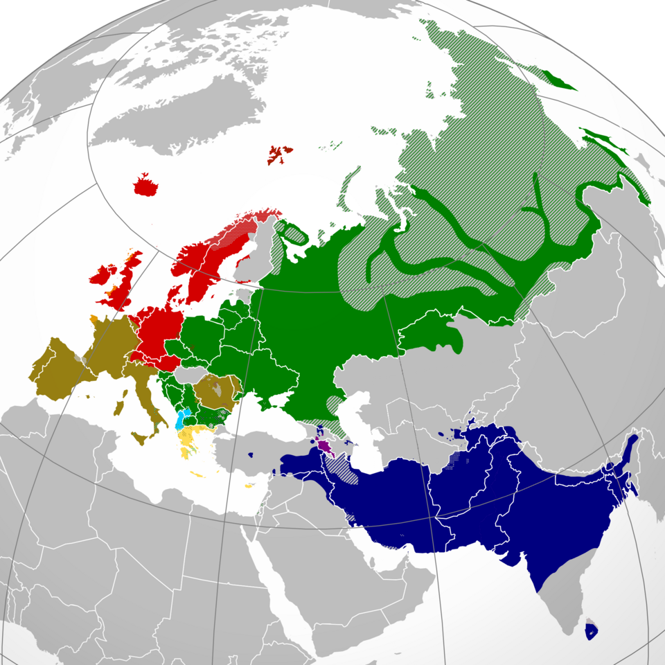
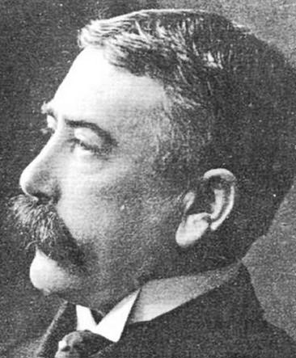
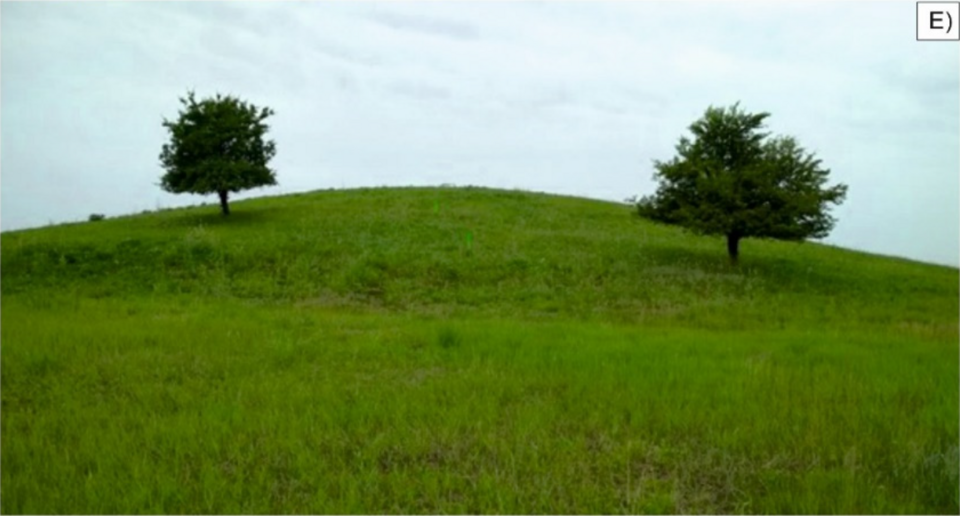
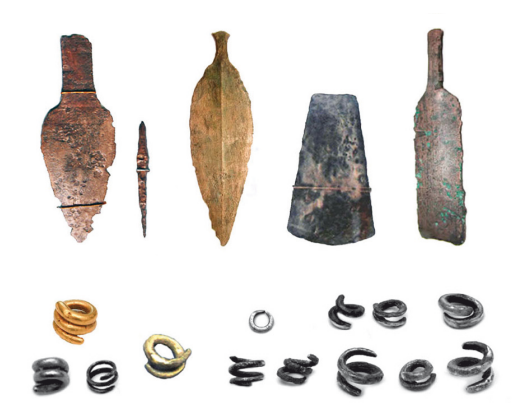

Proto-Indo-European
Generated by openrouter/xiaomi/mimo-v2-pro · April 2, 2026
Somewhere on the windswept steppes north of the Black Sea, roughly six thousand years ago, a people spoke a language that would one day become the ancestor of nearly half the world's population's mother tongue. They left no writing. No monuments bear their words. Yet through the detective work of centuries, linguists have reconstructed this language with remarkable precision. This is the story of Proto-Indo-European — and how a ghost language was brought back to life.

Expansion of Indo-European languages from the Pontic-Caspian steppe across Eurasia.
The Discovery
The realization that most European and many Asian languages share a common ancestor is one of the great intellectual achievements of the modern era — and it began, improbably, with a British judge in colonial India.
In 1786, Sir William Jones, a philologist and jurist serving on the Supreme Court of Judicature in Bengal, delivered a lecture to the Asiatic Society of Calcutta that would reshape linguistics forever. He noted that Sanskrit — the classical language of India — bore to both Greek and Latin "a stronger affinity, both in the roots of verbs and the forms of grammar, than could possibly have been produced by accident." He concluded that all three must share "some common source which, perhaps, no longer exists."
Jones was not the first to notice similarities — earlier scholars had too — but his prestige and clarity of statement gave the idea staying power. The search for that "common source" had begun.

Sir William Jones (1746–1794), whose 1786 lecture sparked the search for a common ancestor language.
The next critical leap came in 1822, when the German scholar Jacob Grimm — better known today for collecting fairy tales with his brother Wilhelm — published his demonstration of systematic sound correspondences between Germanic languages and their cousins (Greek, Latin, Sanskrit). What looked like random differences turned out to follow predictable rules: Latin p corresponded to Germanic f, Latin t to Germanic þ (as in "think"), and so on. This became known as Grimm's Law, and it proved these weren't coincidences — they were family resemblances, distorted by millennia of regular sound change.
By the 1870s, linguists had mapped out the consonant system with confidence, but the vowels remained a puzzle. In 1878, a young Swiss linguist named Ferdinand de Saussure made a bold proposal: that all verbs in the ancestral language had a single core vowel, and that the vowel alternations seen in daughter languages (like English sing/sang/sung) were systematic developments from that single source.

Ferdinand de Saussure (1857–1913), whose 1878 hypothesis about PIE vowels was later confirmed by the decipherment of Hittite.
De Saussure's hypothesis was considered brilliant but unprovable — until the early 20th century, when scholars deciphered clay tablets written in Hittite, an extinct language from ancient Anatolia (modern Turkey) dating to roughly 1600 BCE. Hittite preserved "laryngeal" sounds that had disappeared in every other Indo-European language, and their presence exactly matched what de Saussure had predicted. The reconstruction of Proto-Indo-European was vindicated.
The Homeland Debate
Where was Proto-Indo-European spoken? This question has fueled one of the most heated debates in linguistics and archaeology. Two main hypotheses dominate:
The Steppe (Kurgan) Hypothesis — The Frontrunner
The Kurgan hypothesis, developed most thoroughly by Lithuanian-American archaeologist Marija Gimbutas in the 1950s and refined by scholars like David Anthony, places the PIE homeland in the Pontic-Caspian steppe — the vast grasslands stretching across modern Ukraine, southern Russia, and into Kazakhstan.
The speakers of PIE, according to this view, were the Yamnaya (from Russian ямная, meaning "pit" — referring to their burial customs). These were semi-nomadic pastoralists who domesticated horses, built wheeled vehicles, and herded cattle across the steppe beginning around 3300 BCE. They buried their dead in pits beneath earthen mounds called kurgans, often with ochre powder and sacrificed animals.

A Yamnaya burial kurgan on the Pontic-Caspian steppe. The pit-grave culture gives the Yamnaya their name.
From the steppe, Indo-European-speaking groups fanned outward in waves: into Europe (bringing what would become Celtic, Germanic, Italic, Baltic, and Slavic languages), into Anatolia (Hittite and its relatives), into Iran and India (Indo-Iranian languages), and even into western China (Tocharian).
A landmark 2025 ancient DNA study from Harvard Medical School, published in Nature, provided strong genetic confirmation. Researchers identified that the Yamnaya descend from a mixture of Eastern European Hunter-Gatherers (EHG) and Caucasus Hunter-Gatherers (CHG), and showed that Yamnaya ancestry spread in concert with Indo-European languages across Eurasia. The study also resolved a long-standing puzzle: the Anatolian branch (the oldest attested IE language family) lacked clear Yamnaya ancestry. The answer — a related but earlier steppe population fed into both the Yamnaya and the Anatolian branch — confirmed the steppe hypothesis while adding nuance.

Copper and gold artifacts from Yamnaya culture, demonstrating the metallurgical sophistication of steppe pastoralists.
The Anatolian Hypothesis
The main rival theory was proposed by British archaeologist Colin Renfrew in 1987. He argued that PIE originated in Neolithic Anatolia (modern Turkey) around the 7th millennium BCE, and spread into Europe not with warriors on horseback but with farmers carrying agriculture. As the Neolithic revolution moved northwest from Anatolia into the Balkans, then across Europe, Renfrew argued, it carried languages with it.
Renfrew's hypothesis has the appeal of earlier dates and a peaceful spread model, but it has struggled to account for the linguistic evidence — particularly the reconstructed PIE vocabulary for horses, wheeled vehicles, and pastoral life, which fit the steppe culture far better than early Anatolian farming. The ancient DNA evidence has also increasingly favored the steppe model.
The Family Tree
Proto-Indo-European diverged into roughly a dozen major branches, of which some are living languages spoken by billions today and others are known only from ancient texts or archaeological fragments:

The Indo-European language family tree, showing major branches and their relationships.
Lithuanian deserves special mention. It retains so many archaic features — including a complex case system, pitch accent, and ancient vocabulary — that 19th-century linguists used it as a key tool for reconstructing PIE. The famous quip: "Lithuanian is the Sanskrit of the North."
What PIE Sounded Like
No one spoke PIE into a microphone, but decades of comparative reconstruction have given linguists a remarkably detailed picture:
Phonology (Sounds)
PIE had a rich consonant inventory organized in three series:
- Voiceless stops: *p, *t, *ḱ, *k, *kʷ
- Voiced stops: *b, *d, *ǵ, *g, *gʷ
- Voiced aspirated stops: *bʰ, *dʰ, *ǵʰ, *gʰ, *gʷʰ
- Laryngeals: *h₁, *h₂, *h₃ (mysterious sounds that colored vowels and disappeared in most daughter languages — the key to de Saussure's prediction)
The three-way stop distinction (voiceless / voiced / voiced aspirated) is preserved most faithfully in Sanskrit, which is part of why India's classical language was so crucial to the reconstruction.
Morphology (Word Structure)
PIE was highly inflected — meaning word endings carried grammatical information that English now handles with word order and helper words:
- 8 cases: Nominative, Accusative, Genitive, Dative, Ablative, Instrumental, Locative, Vocative
- 3 genders: Masculine, Feminine, Neuter
- 3 numbers: Singular, Dual (exactly two), Plural
- Basic word order: Subject-Object-Verb (like Latin or Japanese)
Ablaut (Vowel Gradation)
One of PIE's most distinctive features was ablaut — systematic vowel alternation within word roots that signaled grammatical changes. The classic example is the vowel triplet e / o / Ø (zero):
- *bʰer- (full grade: "carry") → Greek phérō, Latin ferō, English bear
- *bʰor- (o-grade) → Greek phorá ("a carrying"), English borrow
- *bʰr- (zero grade: vowel dropped) → seen in compounds and derived forms
This same pattern echoes through English: sing/sang/sung, drive/drove/driven, break/broke/broken — all descendants of PIE ablaut.
Reconstructed Vocabulary
Through systematic comparison, linguists have reconstructed hundreds of PIE roots. Here are some with clear modern descendants:
- *wĺ̥kʷos "wolf" → Latin lupus, Greek lýkos, Sanskrit vṛ́ka-, English wolf, Persian gorg
- *ph₂tḗr "father" → Latin pater, Greek patḗr, Sanskrit pitṛ́, English father
- *h₁eḗd "to eat" → Latin edō, Greek édō, Sanskrit ádmi, English eat
- *h₂ówiyos "sheep" → Latin ovis, Greek óïs, Sanskrit ávi-, English ewe
- *wódr̥ "water" → English water, Russian voda, Greek hýdōr, Latin unda ("wave")
- *dyḗws "sky / heaven" → Latin Iuppiter (Jupiter = "sky father"), Sanskrit Dyáuṣ, Greek Zeús, Norse Týr
- *h₂eḗs "to burn / ash" → Latin āra ("altar"), English ash, Sanskrit ásma ("hearth")
- *nókʷts "night" → Latin nox, Greek nýx, English night, Sanskrit nákt-
The asterisks (*) before each form indicate that these are reconstructions — no one ever wrote them down. They represent the scholarly consensus about what the original forms must have been, derived by working backward from attested daughter languages.
Key Timeline
Proto-Indo-European spoken as a living language on the Pontic-Caspian steppe
Yamnaya culture emerges — horse domestication, wheeled vehicles, kurgan burials
Major migrations begin — IE speakers spread into Europe, Anatolia, and Central/South Asia
Hittite tablets in Anatolia — oldest attested Indo-European language
Mycenaean Greek (Linear B tablets) — earliest Greek writing
Sanskrit composed orally (Rigveda) — preserved through oral tradition
Sir William Jones proposes common ancestor for Sanskrit, Greek, and Latin
Jacob Grimm demonstrates systematic sound correspondences (Grimm's Law)
Ferdinand de Saussure hypothesizes laryngeal sounds in PIE
Hittite deciphered — de Saussure's laryngeals confirmed
Marija Gimbutas proposes the Kurgan hypothesis
Colin Renfrew proposes the Anatolian hypothesis
Ancient DNA confirms massive Yamnaya migration into Europe
Harvard study resolves Anatolian branch ancestry, confirms steppe origin of PIE
Why It Matters
Proto-Indo-European is not merely an academic curiosity. It is the common ancestor of the languages spoken by roughly 3 billion people today — from English to Hindi, from Spanish to Russian. Understanding PIE means understanding how most of humanity came to speak the way we do.
The reconstruction of PIE is also one of the great triumphs of the scientific method applied to the humanities. No one wrote PIE down. No one recorded it. Yet by applying rigorous comparative methods — treating sound change as a law-like process — linguists built a detailed model of a language that died four millennia before Christ, and then watched as genetics and archaeology progressively confirmed their predictions. It is, in the words of Calvert Watkins, "the most successful theory in the humanities."
Every time you say father, wolf, night, or water, you're speaking Proto-Indo-European — reshaped by six thousand years of human wandering, but recognizably, stubbornly, the same.
Sources & Image Credits
- Research verified against Britannica, Wikipedia, and Harvard Medical School
- Indo-European expansion map: Wikimedia Commons
- Sir William Jones portrait: Wikimedia Commons
- Ferdinand de Saussure portrait: Wikimedia Commons
- Yamnaya kurgan and metalwork images: Wikimedia Commons
- Language family tree: Wikimedia Commons